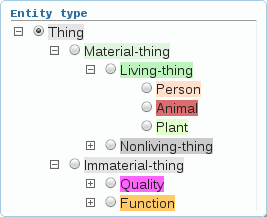

brat annotation configuration
brat annotation configurations are currently controlled by text-based configuration files that can be created and edited in any text editor. This page documents the configuration language.
(Prefer to learn by example? Check out configurations for various projects in the configurations/ directory of your brat installation.)
NOTE: we are planning to introduce GUI-based configuration in a future release, but have so far focused development efforts on other aspects of the platform as the need to alter configurations arises comparatively rarely and the brat configuration language is simple enough to write even by non-experts.
Table of contents
- Configuration basics
- Annotation configuration (annotation.conf)
- Visual configuration (visual.conf)
- Tool configuration (tools.conf)
- Additional details
Configuration basics
Configuration files
the configuration of an annotation project is controlled by three files:
- annotation.conf: annotation type configuration
- visual.conf: annotation display configuration
- tools.conf: annotation tool configuration
Each annotation project typically defines its own annotation.conf. Defining visual.conf and tools.conf is not necessary, and the system falls back on simple default visuals and tools if these files are not present.
The configuration files can be placed anywhere in the brat data directory, and are normally placed in the directory corresponding to the base directory of the collection they apply to. (To determine the configuration for a collection, the system searches up in the directory tree from the directory in which the collection data is toward the root of the brat data/ directory, falling back on default configurations if no configuration is present in any of these locations.)
Configuration file structure
The configuration files follow a simple line-oriented structure and a syntax familiar from many other text-based configuration systems.
The top-level organization of the configuration files is into sections, each marked with a line containing only "[section-name]", where section-name is one of a set of predefined section names defined for the configuration file.
Within sections, each non-empty line defines one configuration item, where with the first non-space sequence names the item, and the rest of the line the specification, which varies by section.
Blank lines are ignored by the configuration reader. Similarly, lines beginning with the number sign "#" (also known as hash character) are ignored as comments.
An example of a simple annotation configuration file defining two entity and two relation types is shown below.
|
|||||||||||||
Annotation configuration (annotation.conf)
The annotation configuration file, annotation.conf, is divided into the following sections:
- [entities]
- [relations]
- [events]
- [attributes]
Each of these sections must be present in the configuration file, but they can be empty. For example, a configuration can define only entity annotation targets by leaving the other three sections empty.
Entity definitions ([entities] section)
The [entities] section defines the types for the things that can be marked in text as types text spans, such as mentions of real-world "things" such as people or locations.
The basic format of the [entities] section is a simple list, with one entity type per line. The following is an example of a simple [entities] section:
|
In addition to listing the entity types, the [entities] section can be used to define just one additional aspect of the annotation: the hierarchy in which the entities are organized. This is optional, and the syntax specifying a hierarchy of entity organization consists simply of TAB characters at the beginning of each line.

|
Such a hierarchy is interpreted an an is-a taxonomy by the system.
The most immediately visible difference that defining an entity type hierarchy makes in annotation is that the type selector shows the hierarchy and allows parts of it to be collapsed (hidden) or opened to assist in navigating the available entity types. (This feature is primarily useful for larger numbers of defined types.)
Relation definitions ([relations] section)
The [relations] section defines binary relations between annotations. Relation annotations can mark, for example, a Family relationship between the entities identified by two Person annotations.
Each line in the [relations] section defines a relation type, the entities it can associate and, optionally, the properties of the relation. The types of annotations that can be associated by the relation are identified using the syntax ARG:TYPE (where ARG are, by convention, Arg1 and Arg2), separated by a comma.
The following example shows a simple [relations] section.
|
Relations can often take arguments of more than one type. This can be defined in the configuration by listing all the possible types separated by the pipe character "|". Cases where not all argument combinations are valid can be constrained by defining one valid set of combinations per line. These features are illustrated in the following example:
|
As for entities, a hierarchy of relation types can be defined simply by placing TAB characters at the beginning of each line.
For further information on relation definitions, see advanced relation configuration.
Event definitions ([events] section)
The [events] section defines n-ary associations between other annotations (entities or events). The "event" category of annotations can be used to mark things that are stated to happen in text, such as two people getting married or a company going bankrupt.
The basic syntax for defining events is similar to that for relations. Each lines defined one event type (or, more specifically, one event "frame" — possible combination of arguments), with the event arguments specified with a ROLE:TYPE syntax and separated by commas. The roles that event participants play in an event (ROLE) in the definition can be freely defined.
The following example shows a simple [events] section.
|
Attribute definitions ([attributes] section)
The [attributes] section defines binary or multi-valued "flags" that can be used to mark other annotations. For example, a Negated attribute could be used to mark the occurrence of an annotated event as being explicitly denied in text, or a Confidence attribute to mark an event as one of Certain, Probable or Doubtful.
Each line in the [attributes] section defines an attribute type and the annotations it can attach to. For binary attributes, the possible values, true and false, are implicit; for multi-valued attributes, the possible values must also be specified.
The annotation type (or types) an attribute can apply to are defined using the ARG:TYPE syntax used also in the definition of relations and events (ARG is, by convention, "Arg"). The values a multi-valued attribute can take are defined using the syntax Value:VAL1|VAL2|VAL3[...], where "Value" is a literal string and VAL1, VAL2 etc. are the possible values.
The following example shows a simple [attributes] section.
|
For further information on configuring the visual display of attributes, see advanced attribute configuration.
Visual configuration (visual.conf)
The visual configuration file, visual.conf, is divided into the following sections:
- [labels]
- [drawing]
Each of these sections must be present in the configuration file, but they can be empty.
Label definitions ([labels] section)
The [labels] section defines the labels to use in the display of the defined annotation types on the user interface. If no labels are defined for a type, the system defaults do displaying the configured type as defined in annotation.conf.
The definition of labels has two primary uses: allowing labels used in the user interface to use arbitrary characters (see the section on type names), and defining abbreviations to use when there is limited space in the layout.
The format of the [labels] section is simple: each line contains a set of strings, separated by pipe characters ("|"). The first string should correspond to a type defined in annotation.conf; the second is taken to be the preferred, full form to use for the type, and the remaining (if any) should correspond to its progressively shorter abbreviations.
The following example shows a simple [labels] section.
|
Note that the first and second strings will be identical in cases where the type as defined in annotation.conf matches the preferred way of displaying it. Also, space is permitted in labels, and space surrounding labels is ignored.
Drawing configuration ([drawing] section)
The [drawing] section defines various non-textual aspects of the visual presentation. If no visual configuration is defined for a type, the system uses default settings, which can themselves be configured.
The format of the [drawing] section is similar to that used in the other configurations. Each line contains the type of the annotation that the visual configuration applies to, and a set of KEY:VALUE pairs specifying the visual settings.
The following example shows a simple [drawing] section.
|
This example specifies that annotations of the Person type should be drawn with background of the color #ffccaa, and that arcs representing Family relations should be drawn with dark green lines ending with 5-pixel triangular arrowheads.
The recognized visual configuration keys, their values, and purpose are
- fgColor: any HTML color specification (e.g. "black"), sets the color of a span text in the visualization.
- bgColor: any HTML color specification (e.g. "white"), sets the color of a span "box" background in the visualization.
- borderColor: any HTML color specification (e.g. "black"), sets the color of a span "box" border in the visualization. Also supports special value "darken", which specifies to use a darker shade of bgColor for the border.
- color: any HTML color specification (e.g. "black"), sets the color of an arc in the visualization.
- dashArray: any valid SVG stroke-dasharray specification using dashes (instead of commas or space) as separators (e.g. "3-3"), sets the dash/dot pattern for lines in the span/arc visualization ("-" works for solid line)
The special labels "SPAN_DEFAULT" and "ARC_DEFAULT" are recognized as setting defaults that will be used for types without specific settings. It is not necessary to define all aspects of the visualization (e.g. just Color can be given): defaults will be used for unspecified cases. The following example illustrates the use of these defaults.
|
In this configuration, all annotation types except Person and Family will be draws using the specified default values. Further Person and Family annotations will also "inherit" the defaults for aspect of the visual presentation that are not explicitly defined, so that e.g. for the borderColor of Person annotations, the system, will use the special value darken.
Tool configuration (tools.conf)
The annotation tool configuration file, tools.conf, is divided into the following sections:
- [search]
- [annotators]
- [disambiguators]
Each of these sections must be present in the configuration file, but they can be empty.
Search configuration ([search] section)
Annotation tool configuration ([annotators] section)
Disambiguation tool configuration ([disambiguators] section)
Additional details
Advanced relation configuration
Relation definitions support the ability to set relation properties through the special attribute <REL-TYPE> as shown in the following example.
|
The <REL-TYPE> specification currently supports two properties, symmetric and transitive, which can apply either separately or together. Multiple properties can be combined by using the dash character ("-"), as in the above example.
The combination symmetric-transitive defines an equivalence relation.
Advanced attribute configuration
Multi-valued attributes can be defined using the syntax illustrated in the following example (annotation.conf):
|
The visual configuration of multi-valued attributes in visual.conf can then specified as in one of the following examples:
|
or
|
Shortcuts and macros
The following "shortcuts" are defined for convenience for annotation.conf definitions:
- <ENTITY>: any entity type (any type appearing in the [entities] section)
- <RELATION>: any relation type (any type appearing in the [relations] section)
- <EVENT>: any event type (any type appearing in the [events] section)
- <ANY>: any type
These shortcuts can be used in definitions as in the following partial annotation.conf example:
|
Here, Transport events, for example, take a Theme which is any entity type and a Cause of any type.
The configuration files additionally support a syntax for defining arbitrary "macros", as illustrated in the following:
|
Defined macros can then appear anywhere in the configuration, and will be interpreted using simple textual replacement; any occurrence of a string defined as a macro (e.g. "<LIVING-THING>") in a configuration file will be processed as if its value (e.g. "Person|Animal|Plant") were written in its place.
These shortcuts can make configurations with many types more concise and easier to read and write.
Type names
Each annotation type consists of one or more characters, constrained to the set of alphanumeric characters ("a"-"z", "A"-"Z", "0"-"9"), the hyphen ("-") and the underscore ("_") character.
However, these restrictions apply only to annotation.conf, which defines the types used by the system internally and in storage on disk. The corresponding labels appearing on the user interface, defined in visual.conf, have no such limitations, and can contain, for example, space or arbitrary Unicode characters.
The following (partial) configuration examples illustrate arbitrary characters in labels on the user interface.
annotation.conf:

|
visual.conf:
|